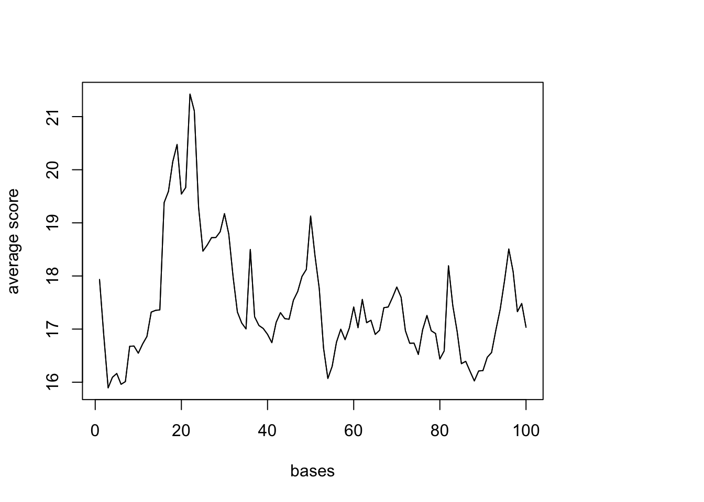
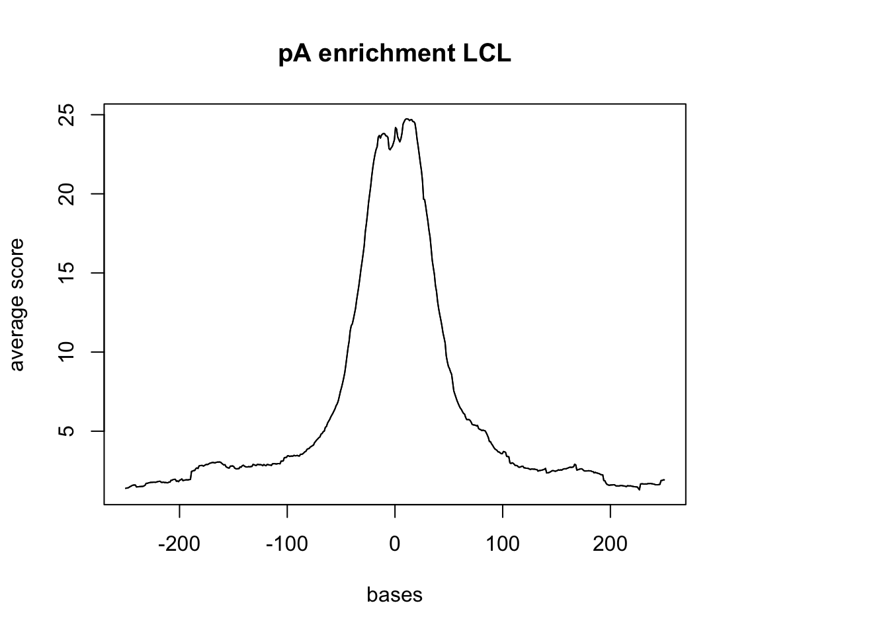
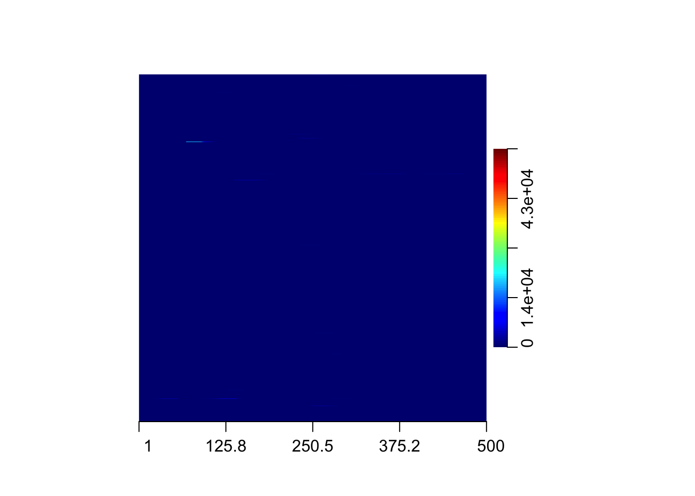
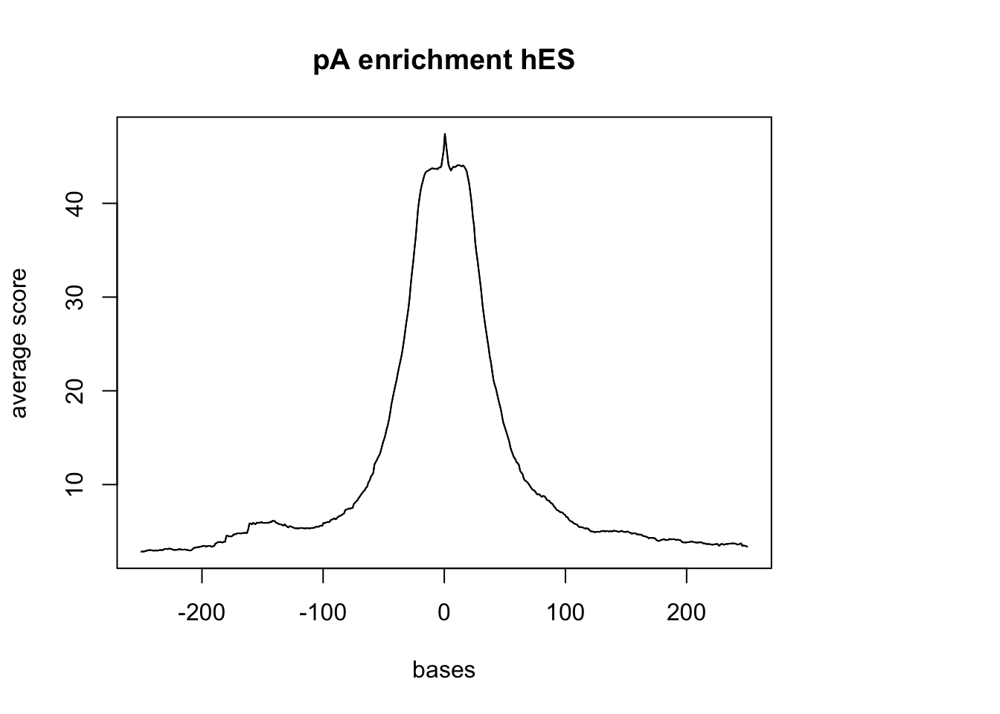
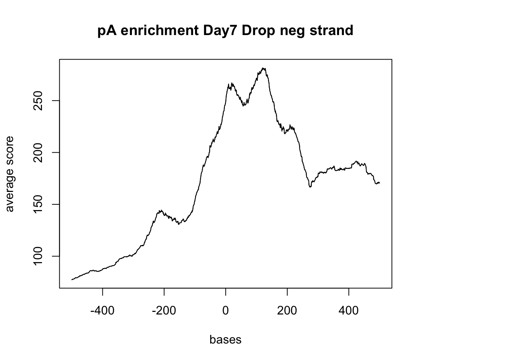
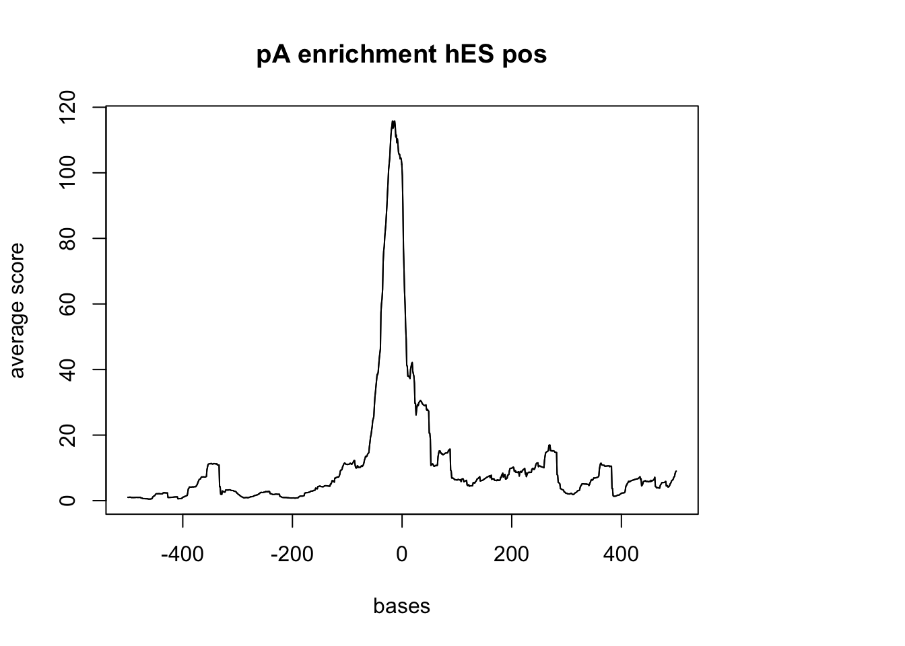
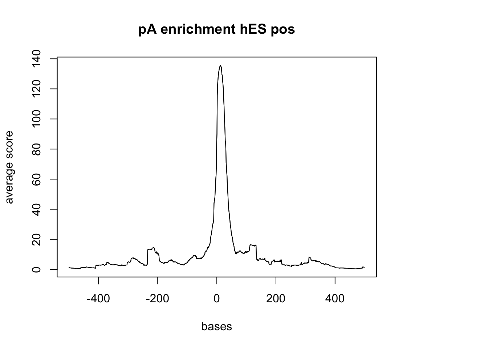

Last updated: 2018-01-26
Code version: 4aeaf94
I have a file with the 3` UTRs and I want to extract coverage from the drop and dronc seq bam files that are in these UTR regions.
I will use:
This is taking too much memory. I am going to convert bam to a bed file then sort it.
bedtools bamtobed -i /project2/gilad/spott/dropBams/Day7_cardiomyocytes_drop_seq.bam > Day7_cardiomyocytes_drop_seq.bed
sort -k1,1 -k2,2n Day7_cardiomyocytes_drop_seq.bed > Day7_cardiomyocytes_drop_seq_sort.bed Do this for the UTR file as well.
sort -k1,1 -k2,2n three_prime_utr.bed > three_prime_utr_sort.bed Now add the sorted to the coverage: Update the drop7_cardio_3UTR_cov.sh script
bedtools coverage -d -sorted -a /project2/gilad/briana/apa_sites/Day7_cardiomyocytes_drop_seq_sort.bed -b /project2/gilad/briana/apa_sites/three_prime_utr_sort.bed > drop7_cardio_3utr.txtDo this for one of 3’ seq lines too (LCL). The scipt is called lcl_3UTR_cov.sh.
These files are too big to move onto my computer. I need to think of anotehr way to vizualize them.
Alternative anaylsis: Try to look at this similar to how I looked at the TSS enrichment.
Step 1: Download drop and dronc seq bam/ index files to my computer in the netseq data file.
clusters.hg38
Day7_cardiomyocytes_drop_seq.bam
Day7_cardiomyocytes_drop_seq.bam.bai
three_prime_utr.bed
Step 2: Pull in packages and data for analysis:
#get reads
reads <- readGAlignments(file = "../data/Day7_cardiomyocytes_drop_seq.bam", index="../data/Day7_cardiomyocytes_drop_seq.bam.bai")
reads.GR <- granges(reads)
UTR=readGeneric("../data/three_prime_utr.bed")
pAsite= readGeneric("../data/clusters.hg38.bed")#resize so I am looking 10,000 up and downstream of the center of the UTR
UTR %<>% resize(., width=10000, fix="center")
(UTR_width= summary(width(UTR))) Min. 1st Qu. Median Mean 3rd Qu. Max.
10000 10000 10000 10000 10000 10000 sm <- ScoreMatrixBin(target = reads.GR, windows = UTR, bin.num = 100, bin.op = "mean") Warning in .local(target, windows, bin.num, bin.op, strand.aware): 5723
windows fall off the targetplotMeta(sm)
Do this against the pAsites:
(pAs_width= summary(width(pAsite))) Min. 1st Qu. Median Mean 3rd Qu. Max.
2.00 8.00 13.00 13.13 18.00 61.00 #look 200 up and down stream of each
pAsite %<>% resize(., width=500, fix="center")
(pAs_width2= summary(width(pAsite))) Min. 1st Qu. Median Mean 3rd Qu. Max.
500 500 500 500 500 500 sm_pA <- ScoreMatrixBin(target = reads.GR, windows = pAsite, bin.num = 500, bin.op = "mean",strand.aware=TRUE)Warning in .local(target, windows, bin.num, bin.op, strand.aware): 10
windows fall off the targetplotMeta(sm_pA, xcoords = c(-250,250), main="pA enrichment Day7 Drop") Try with the Dronc seq data:
dronc_reads <- readGAlignments(file = "../data/Day7_cardiomyocytes_droNC_seq.bam", index="../data/Day7_cardiomyocytes_droNC_seq.bam.bai")
dronc_reads.GR <- granges(dronc_reads)
dronc_sm_pA <- ScoreMatrixBin(target =dronc_reads.GR, windows = pAsite, bin.num = 500, bin.op = "mean", strand.aware=TRUE)Warning in .local(target, windows, bin.num, bin.op, strand.aware): 10
windows fall off the targetplotMeta(dronc_sm_pA, xcoords = c(-250,250), main="pA enrichment Day7 Dronc")
Compare this result to the 3` seq data :
LCL_reads <- readGAlignments(file = "../data/blcl.hg38.sorted.bam", index="../data/blcl.hg38.sorted.bam.bai")
LCL_reads.GR <- granges(LCL_reads)
sm_LCL_pA <- ScoreMatrixBin(target = LCL_reads.GR, windows = pAsite, bin.num = 500, bin.op = "mean", strand.aware=TRUE)
plotMeta(sm_LCL_pA, xcoords = c(-250,250), main="pA enrichment LCL")hES_reads <- readGAlignments(file = "../data/hES.hg38.sorted.bam", index="../data/hES.hg38.sorted.bam.bai")
hES_reads.GR <- granges(hES_reads)
sm_hES_pA <- ScoreMatrixBin(target = hES_reads.GR, windows = pAsite, bin.num = 500, bin.op = "mean", strand.aware=TRUE)
plotMeta(sm_hES_pA, xcoords = c(-250,250), main="pA enrichment hES") 
I now want to try to look at the 3` most pAs. Start by overlapping the PaS sites with the UTRs then annotate the file with the UTR name.
bedtools intersect- I want only the As (pAs) that are in B (UTR)
Alternative methed: subset the pAS in the 3’ UTRs then seperate the files by strandedness.
pAsite_pos= readGeneric("../data/clusters.hg38.3utr.pos.bed")
pAsite_pos %<>% resize(., width=1000, fix="center")
(pAs_pos_width= summary(width(pAsite_pos))) Min. 1st Qu. Median Mean 3rd Qu. Max.
1000 1000 1000 1000 1000 1000 pAsite_neg= readGeneric("../data/clusters.hg38.3utr.neg.bed")
pAsite_neg %<>% resize(., width=1000, fix="center")#drop and pos strand
sm_pA_pos <- ScoreMatrixBin(target = reads.GR, windows = pAsite_pos, bin.num = 1000, bin.op = "mean")
plotMeta(sm_pA_pos, xcoords = c(-500,500), main="pA enrichment Day7 Drop pos strand") negative Graph:
#drop and neg strand
sm_pA_neg <- ScoreMatrixBin(target = reads.GR, windows = pAsite_neg, bin.num = 1000, bin.op = "mean")
plotMeta(sm_pA_neg, xcoords = c(-500,500), main="pA enrichment Day7 Drop neg strand")
hES with pos
sm_hES_pA_pos <- ScoreMatrixBin(target = hES_reads.GR, windows = pAsite_pos, bin.num = 1000, bin.op = "mean")
plotMeta(sm_hES_pA_pos, xcoords = c(-500,500), main="pA enrichment hES pos") 
hES neg
sm_hES_pA_neg <- ScoreMatrixBin(target = hES_reads.GR, windows = pAsite_neg, bin.num = 1000, bin.op = "mean")
plotMeta(sm_hES_pA_neg, xcoords = c(-500,500), main="pA enrichment hES pos") library(EnrichedHeatmap)Loading required package: ComplexHeatmap========================================
ComplexHeatmap version 1.17.1
Bioconductor page: http://bioconductor.org/packages/ComplexHeatmap/
Github page: https://github.com/jokergoo/ComplexHeatmap
Documentation: http://bioconductor.org/packages/ComplexHeatmap/
If you use it in published research, please cite:
Gu, Z. Complex heatmaps reveal patterns and correlations in multidimensional
genomic data. Bioinformatics 2016.
========================================Loading required package: locfitlocfit 1.5-9.1 2013-03-22========================================
EnrichedHeatmap version 1.9.2
Bioconductor page: http://bioconductor.org/packages/EnrichedHeatmap/
Github page: https://github.com/jokergoo/EnrichedHeatmap
Documentation: http://bioconductor.org/packages/EnrichedHeatmap/
========================================
Attaching package: 'EnrichedHeatmap'The following object is masked from 'package:ComplexHeatmap':
+.AdditiveUnitDrop seq day7 cardiomyocytes GRanges object:
reads.GR[1:5]GRanges object with 5 ranges and 0 metadata columns:
seqnames ranges strand
<Rle> <IRanges> <Rle>
[1] chr1 [15855, 15916] -
[2] chr1 [16449, 16510] -
[3] chr1 [16449, 16510] -
[4] chr1 [16449, 16510] -
[5] chr1 [16449, 16510] -
-------
seqinfo: 194 sequences from an unspecified genomepAs:
pAsite[1:5]GRanges object with 5 ranges and 0 metadata columns:
seqnames ranges strand
<Rle> <IRanges> <Rle>
[1] chr1 [628991, 629490] *
[2] chr1 [629005, 629504] *
[3] chr1 [629025, 629524] *
[4] chr1 [629042, 629541] *
[5] chr1 [629056, 629555] *
-------
seqinfo: 43 sequences from an unspecified genome; no seqlengths#mat_drop7_pAs = normalizeToMatrix(UTR , pAsite, value_column = "ranges", extend = 1000, mean_mode = "w0", w = 100)# library(biomaRt)
# mart = useMart(biomart = "ENSEMBL_MART_ENSEMBL",
# dataset = "hsapiens_gene_ensembl")
# filterlist <- c(1:22, 'X', 'Y')
# ds = useDataset('hsapiens_gene_ensembl', mart = mart)
#
# egs = getBM(attributes = c('ensembl_gene_id', 'external_gene_name', 'chromosome_name', 'start_position', 'end_position', 'strand'),
# filters = 'chromosome_name',
# values = filterlist,
# mart = ds)
# reads.GR_chr <- granges(reads, seqnames = Rle(paste0('chr', egs$chromosome_name )))
# pAsite_chr= readGeneric("../data/clusters.hg38.bed", seqnames = Rle(paste0('chr', egs$chromosome_name )))sessionInfo()R version 3.4.2 (2017-09-28)
Platform: x86_64-apple-darwin15.6.0 (64-bit)
Running under: macOS Sierra 10.12.6
Matrix products: default
BLAS: /Library/Frameworks/R.framework/Versions/3.4/Resources/lib/libRblas.0.dylib
LAPACK: /Library/Frameworks/R.framework/Versions/3.4/Resources/lib/libRlapack.dylib
locale:
[1] en_US.UTF-8/en_US.UTF-8/en_US.UTF-8/C/en_US.UTF-8/en_US.UTF-8
attached base packages:
[1] grid stats4 parallel stats graphics grDevices utils
[8] datasets methods base
other attached packages:
[1] EnrichedHeatmap_1.9.2 locfit_1.5-9.1
[3] ComplexHeatmap_1.17.1 GenomicAlignments_1.14.1
[5] Rsamtools_1.30.0 Biostrings_2.46.0
[7] XVector_0.18.0 SummarizedExperiment_1.8.1
[9] DelayedArray_0.4.1 matrixStats_0.53.0
[11] Biobase_2.38.0 BiocInstaller_1.28.0
[13] magrittr_1.5 data.table_1.10.4-3
[15] genomation_1.10.0 dplyr_0.7.4
[17] GenomicRanges_1.30.1 GenomeInfoDb_1.14.0
[19] IRanges_2.12.0 S4Vectors_0.16.0
[21] BiocGenerics_0.24.0
loaded via a namespace (and not attached):
[1] Rcpp_0.12.15 circlize_0.4.3 lattice_0.20-35
[4] assertthat_0.2.0 rprojroot_1.3-2 digest_0.6.14
[7] gridBase_0.4-7 R6_2.2.2 plyr_1.8.4
[10] backports_1.1.2 evaluate_0.10.1 ggplot2_2.2.1
[13] pillar_1.1.0 GlobalOptions_0.0.12 zlibbioc_1.24.0
[16] rlang_0.1.6 lazyeval_0.2.1 GetoptLong_0.1.6
[19] Matrix_1.2-12 rmarkdown_1.8.5 BiocParallel_1.12.0
[22] readr_1.1.1 stringr_1.2.0 RCurl_1.95-4.10
[25] munsell_0.4.3 compiler_3.4.2 rtracklayer_1.38.3
[28] pkgconfig_2.0.1 shape_1.4.3 htmltools_0.3.6
[31] tibble_1.4.2 GenomeInfoDbData_1.0.0 XML_3.98-1.9
[34] bitops_1.0-6 gtable_0.2.0 git2r_0.21.0
[37] scales_0.5.0 KernSmooth_2.23-15 stringi_1.1.6
[40] impute_1.52.0 reshape2_1.4.3 bindrcpp_0.2
[43] RColorBrewer_1.1-2 rjson_0.2.15 tools_3.4.2
[46] BSgenome_1.46.0 glue_1.2.0 seqPattern_1.10.0
[49] hms_0.4.1 plotrix_3.7 yaml_2.1.16
[52] colorspace_1.3-2 knitr_1.18 bindr_0.1 This R Markdown site was created with workflowr